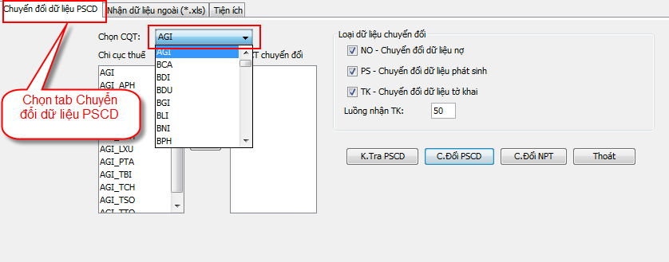
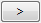
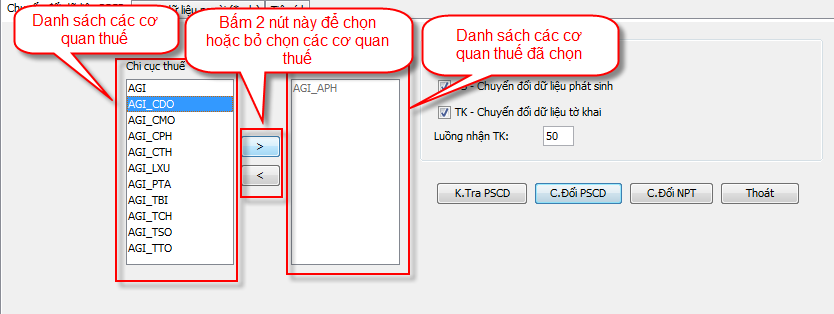

Chuyển đổi dữ liệu nợ, phát sinh và chi tiết tờ khai 10/KK-TNCN vào hệ thống PITMS
Chọn tab: Chuyển đổi dữ liệu PSCD, sau đó nháy
chuột vào thanh combo box Chọn cqt và chọn tỉnh
để chuyển đổi dữ liệu. Danh sách các cơ quan thuế của tỉnh
đó sẽ hiện thị trong danh sách Chi cục thuế.

Lựa chọn các cơ quan thuế cần chuyển đổi trong danh sách
Chi cục thuế, sau đó bấm vào nút 
để thêm cơ quan thuế đó vào danh sách DS CCT chuyển
đổi. Tương tự để xóa một cơ quan thuế ra khỏi danh
sách DS CCT chuyển đổi thì bạn chọn cơ quan thuế
cần xóa trong danh sách DS CCT chuyển đổi sau đó
bấm vào nút .

Bước tiếp theo bạn phải chọn loại hình dữ liệu cần phải chuyển đổi vào hệ thống PITMS: